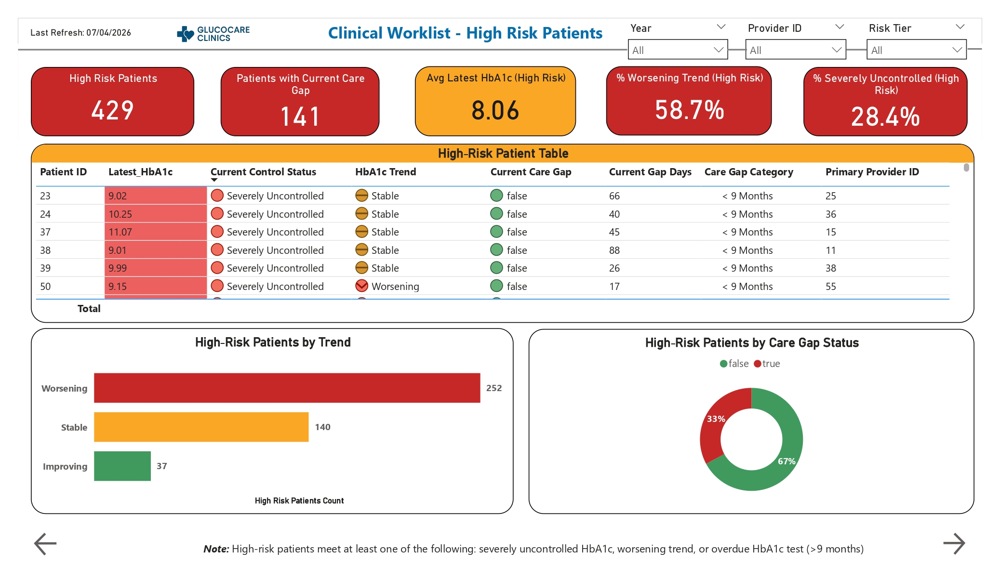
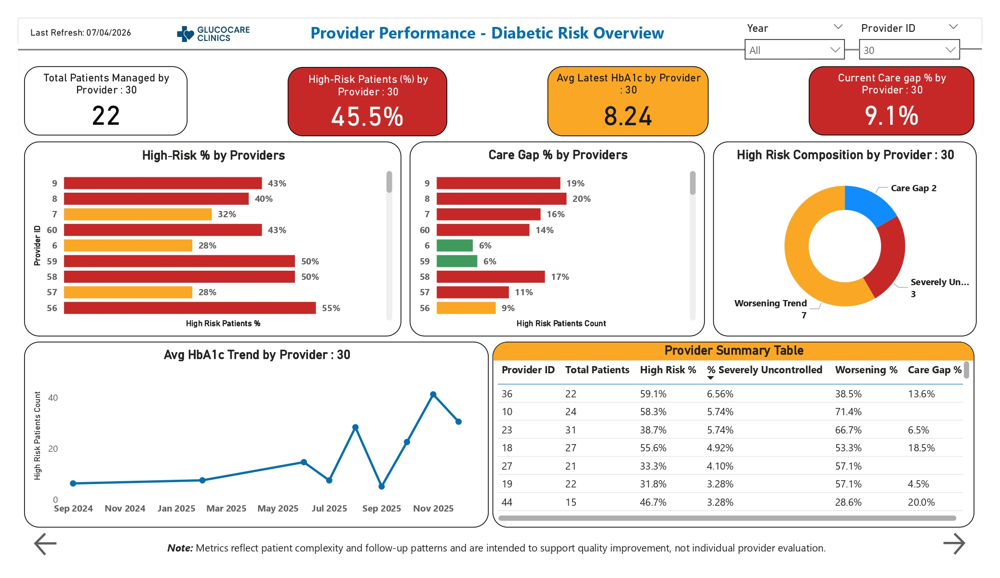
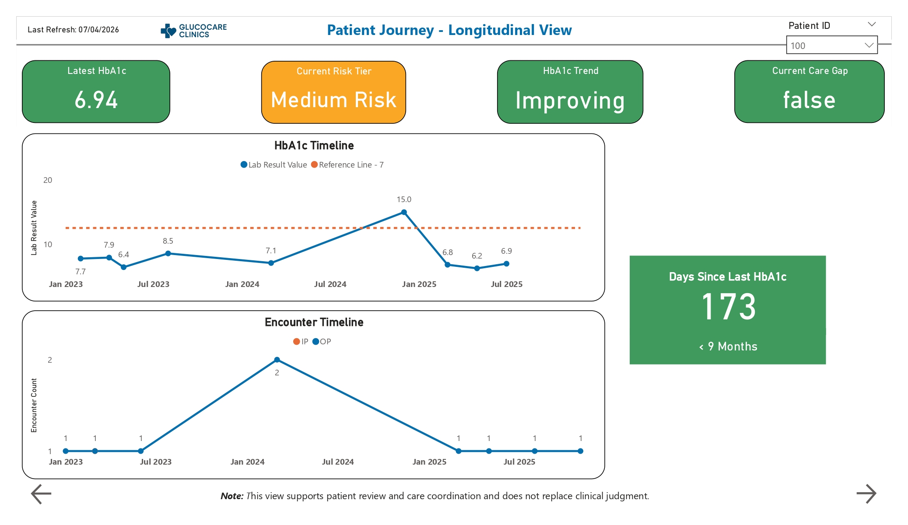

Undetected Clinical Deterioration
Patients with gradual long-term increases in HbA1c remained unflagged until acute complications occurred, increasing inpatient utilization risk.
Designed an end-to-end population health analytics platform that transforms fragmented EHR, laboratory, medication, and encounter data into continuous, time-aware intelligence for diabetes risk stratification, care-gap detection, provider-panel monitoring, and patient-level longitudinal analysis.
Visit-based and fragmented healthcare data architectures prevented care teams from seeing progressive deterioration across the full patient journey.
Patients with gradual long-term increases in HbA1c remained unflagged until acute complications occurred, increasing inpatient utilization risk.
Care teams lacked an automated mechanism to identify disengaged patients who exceeded the critical 9-month HbA1c monitoring threshold.
Medical leadership could not quantify the true chronic risk burden across provider panels, limiting data-driven quality improvement.
A longitudinal analytics solution was built to preserve years of clinical history and convert raw transactions into patient-level, provider-level, and population-level insight.
Azure Data Factory orchestrated full and incremental loads across longitudinal patient timelines while preserving growing event history.
Strict row-count and null checks isolated failing inputs before they could affect downstream reporting.
A multi-tier Azure SQL design optimized high-performance time-series analysis.
Separate fact tables for labs, encounters, and medications used role-playing temporal dimensions for clean DAX calculations.
Pandas scripts audited clinical validity boundaries, irregular follow-up intervals, and misaligned categorical lab results.
A patient-grain rule engine calculated latest markers, variation coefficients, Improving/Stable/Worsening trajectories, and tracking drop-offs.
Delivered executive commands, high-risk watchlists, provider-panel summaries, and patient longitudinal timelines.
The active chronic cohort was stratified into actionable risk tiers.
The platform quantified the largest patient segment requiring continued monitoring.
Stable patients were separated from higher-risk populations for more focused resource use.
Longitudinal analysis revealed that one quarter of diabetic patients were worsening despite stable population averages.
Patients more than 9 months overdue for HbA1c monitoring were identified for immediate nurse follow-up.
Provider-panel summaries quantified patient complexity and supported proactive chronic-care workflows under value-based care contracts.
A time-aware architecture preserves longitudinal history and converts clinical events into patient-risk and care-gap intelligence.
Labs, encounters, medications, demographics
Row counts, nulls, and clinical bounds
Role-playing dates and longitudinal facts
Trend, tier, and care-gap features
Watchlists, provider panels, and outreach
The workflow turns years of clinical events into actionable population-health intelligence.




Replace this placeholder with the public Power BI embed URL after publishing the report.
Replace this generic YouTube URL after publishing the walkthrough.
The repository contains project documentation, pipeline details, notebooks, screenshots, and implementation context.
Discover more healthcare analytics and enterprise data transformation projects.